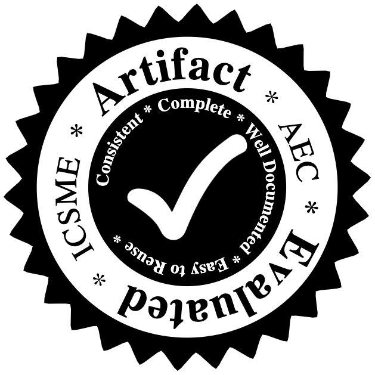

| Start Time | Track | Paper |
|---|---|---|
| 10:30 | Research | Zeinab Abou Khalil, Eleni Constantinou, Tom Mens, Laurence Duchien and Clément Quinton A Longitudinal Analysis of Bug Handling Across Eclipse Releases |
| 10:50 | Research | Théo Zimmermann and Annalí Casanueva Artís Impact of switching bug trackers: a case study on a medium-sized open source project |
| 11:10 | Journal First | Chao Ni, Xiang Chen, Xin Xia, Qing Gu and Yingquan Zhao Multi-task Defect Prediction Journal of Software: Evolution and Process |
| 11:30 | Journal First | Masanari Kondo, Daniel German, Osamu Mizuno and Eun-Hye Choi The Impact of Context Metrics on Just-In-Time Defect Prediction Empirical Software Engineering |
| 11:50 | Short Papers | Yigit Kucuk, Tim Henderson and Andy Podgurski The Impact of Rare Failures on Statistical Fault Localization: the Case of the Defects4J Suite |
| Start Time | Track | Paper |
|---|---|---|
| 10:30 | Research | Luis Cruz, Rui Abreu, John Grundy, Li Li and Xin Xia Do Energy-oriented Changes Hinder Maintainability? |
| 10:50 | Research | Christopher Vendome, Diana Solano, Santiago Liñán and Mario Linares-Vásquez Can everyone use my app? An Empirical Study on Accessibility in Android Apps |
| 11:10 | Research | Yingjun Lyu, Ali Alotaibi and William G.J. Halfond Quantifying the Performance Impact of SQL Antipatterns on Mobile Applications |
| 11:30 | Research | Mian Wan, Negarsadat Abolhassani and William G. J. Halfond An Empirical Study of UI Implementations in Android Applications |
| 11:50 | Short Papers | Kamonphop Srisopha, Chukiat Phonsom, Keng Lin and Barry Boehm Same App, Different Countries: A Preliminary User Reviews Study on Most Downloaded iOS Apps |
| Start Time | Track | Paper |
|---|---|---|
| 13:30 | Research | Aindrila Sarkar, Peter Rigby and Béla Bartalos Improving Bug Triaging with High Confidence Predictions at Ericsson |
| 13:50 | Research | Renaud Rwemalika, Marinos Kintis, Mike Papadakis, Yves Le Traon and Pierre Lorrach An industrial study on the differences between pre-release and post-release bugs |
| 14:10 | Journal First | Gemma Catolino, Fabio Palomba, Andy Zaidman and Filomena Ferrucci Not all bugs are the same: Understanding, characterizing, and classifying bug types Journal of Systems and Software |
| 14:30 | Journal First | Md. Rejaul Karim, Akinori Ihara, Eunjong Choi and Hajimu Iida Identifying and Predicting Key Features to Support Bug Reporting Journal of Software: Evolution and Process |
| Start Time | Track | Paper |
|---|---|---|
| 13:30 | Research | Christopher Mills, Javier Escobar-Avila, Aditya Bhattacharya, Grigoriy Kondyukov, Shayok Chakraborty and Sonia Haiduc Tracing with Less Data: Active Learning for Classification-Based Traceability Link Recovery |
| 13:50 | Research | Antoine Barbez, Foutse Khomh and Yann-Gaël Guéhéneuc Deep Learning Anti-patterns from Code Metrics History |
| 14:10 | Industry | Han Anu, Jie Chen, Wenchang Shi, Jianwei Hou, Bin Liang and Bo Qin An Approach to Recommendation of Verbosity Log Levels Based on Logging Intention |
| 14:30 | Short Papers | Danielle Gonzalez, Holly Hastings and Mehdi Mirakhorli Automated Characterization of Software Vulnerabilities |
| 14:40 | Short Papers | David N. Palacio, Daniel McCrystal, Kevin Moran, Carlos Bernal-Cárdenas, Denys Poshyvanyk and Chris Shenefiel Learning to Identify Security-Related Issues Using Convolutional Neural Networks |
| Start Time | Track | Paper |
|---|---|---|
| 15:30 | Research | Yi Gao, Zan Wang, Shuang Liu, Lin Yang, Sang Wei and Yuanfang Cai TECCD: A Tree Embedding Approach for Code Clone Detection |
| 15:50 | Research | Manishankar Mondal, Banani Roy, Chanchal K. Roy and Kevin Schneider Investigating Context Adaptation Bugs in Code Clones |
| 16:10 | Industry | Nicolas Anquetil, Anne Etien, Gaelle Andreo and Stéphane Ducasse Decomposing God Classes at Siemens: A Visualization tool and approach |
| 16:30 | Short Papers | Rodrigo Rebouças de Almeida, Christoph Treude and Uirá Kulesza Tracy: A Business-driven Technical Debt Prioritization Framework |
| 16:40 | Short Papers | Martina Iammarino, Fiorella Zampetti, Lerina Aversano and Massimiliano Di Penta Self-Admitted Technical Debt Removal and Refactoring Actions: Co-Occurrence or More? |
| Start Time | Track | Paper |
|---|---|---|
| 15:30 | Research | Chunhua Yang and Jim Whitehead Identifying the Within-Statement Changes to Facilitate Change Understanding |
| 15:50 | Research | Quinn Hanam, Ali Mesbah and Reid Holmes Aiding Code Change Understanding with Semantic Change Impact Analysis |
| 16:10 | Journal First | Qingye Wang, Xin Xia, David Lo and Shanping Li Why is my code change abandoned? Information & Software Technology |
| 16:30 | Short Papers | Ferdian Thung, Kang Hong Jin, Lingxiao Jiang and David Lo Towards Generating Transformation Rules without Examples for Android API Replacement |
| 16:40 | Short Papers | Markos Viggiato, Johnatan Oliveira, Eduardo Figueiredo, Pooyan Jamshidi and Christian Kästner How Do Code Changes Evolve in Different Platforms? A Mining-based Investigation |
| Start Time | Track | Paper | |
|---|---|---|---|
| 10:30 | Research | Gemma Catolino, Fabio Palomba, Andy Zaidman and Filomena Ferrucci How the Experience of Development Teams Relates to Assertion Density of Test Classes |
|
| 10:50 | Research | Bo Zhang, Hongyu Zhang, Junjie Chen, Dan Hao and Pablo Moscato Automatic Discovery and Cleansing of Numerical Metamorphic Relations |
 |
| 11:20 | Journal First | Hernán Ceferino Vázquez, Alexandre Bergel, Santiago Vidal, Andrés Díaz Pace and Claudia Marcos Slimming JavaScript Applications: an Approach for Removing Unused Functions from JavaScript Libraries Information & software Technology |
|
| 11:40 | Short Papers | Atheer Abu Zaid, Manar Alalfi and Ali Miri Automated Identification of Over-Privileged SmartThings Apps |
|
| 11:50 | Short Papers | Krishna Neupane, Kabo Cheung and Yi Wang EmoD: An End-to-End Approach for Investigating Emotion Dynamics in Software Development |
|
| Start Time | Track | Paper | ||
|---|---|---|---|---|
| 10:30 | Research | Jiamou Sun, Zhenchang Xing, Rui Chu, Helai Bai, Jinshui Wang and Xin Peng Know-How in Programming Tasks: From Textual Tutorials to Task-Oriented Knowledge Graph |
||
| 10:50 | Research | Christian Newman, Michael J. Decker, Reem Alsuhaibani, Dishant Kaushik, Anthony Peruma and Emily Hill An Empirical Study of Abbreviations and Expansions in Software Artifacts |
||
| 11:20 | Short Papers | Mohammed Alhamed and Tim Storer Estimating Software Task Effort in Crowds |
||
| 11:30 | Short Papers | Omar Elazhary, Margaret-Anne Storey, Neil Ernst and Andy Zaidman Do as I Do, Not as I Say: Do Contribution Guidelines Match the GitHub Contribution Process? |
||
| 11:40 | Short Papers | Thomas Durieux, Rui Abreu, Martin Monperrus, Tegawendé F. Bissyandé and Luís Cruz An Analysis of 35+ Million Jobs of Travis CI |
||
| 11:50 | Short Papers | Miroslav Tushev, Saket Khatiwada and Anas Mahmoud Linguistic Change in Open Source Software |
||
| Start Time | Track | Paper |
|---|---|---|
| 13:30 | Research | Michele Tufano, Cody Watson, Gabriele Bavota, Massimiliano Di Penta, Martin White and Denys Poshyvanyk Learning How to Mutate Source Code from Bug-Fixes |
| 13:50 | Journal First | Vaclav Rajlich Five recommendations for software evolvability Journal of Software: Evolution and Process |
| 14:10 | Short Papers | Tam Nguyen, Phong Vu and Tung Nguyen Personalized Code Recommendation |
| 14:20 | Short Papers | Alexander William Wong, Amir Salimi, Shaiful Chowdhury and Abram Hindle Syntax and Stack Overflow: A methodology for source code error and fix extraction |
| 14:30 | Short Paper | Tao Wang, Xiao Yu, Zhengyi Qiu, Guoliang Jin and Frank Mueller BarrierFinder: Recognizing Ad Hoc Barriers |
| 14:40 | Short Papers | Moumita Asad, Kishan Kumar Ganguly and Kazi Sakib Impact Analysis of Syntactic and Semantic Similarities on Patch Prioritization in Automated Program Repair |
| Start Time | Track | Paper |
|---|---|---|
| 13:30 | Research | Alex Cummaudo, Rajesh Vasa, John Grundy, Mohamed Abdelrazek and Andrew Cain Losing Confidence in Quality: Unspoken Evolution of Computer Vision Services |
| 13:50 | Journal First | Miguel Campusano, Johan Fabry and Alexandre Bergel Live Programming in Practice: a Controlled Experiment on State Machines for Robotic Behaviors Information & software Technology |
| 14:10 | Journal First | Akond Rahman and Laurie Williams Source Code Properties of Defective Infrastructure as Code Scripts Information & software Technology |
| 14:30 | Short Papers | Masaki Hosono, Hironori Washizaki, Kiyoshi Honda, Hiromasa Nagumo, Hisanobu Sonoda, Yoshiaki Fukazawa, Kazuki Munakata, Takao Nakagawa, Yusuke Nemoto, Susumu Tokumoto and Supasit Monpratarnchai Inappropriate Usage Examples in Web API Documentations |
| 14:40 | Short Papers | Zhe Jin, Kong Yik Chee and Xin Xia What Do Developers Discuss about Biometric APIs? |
| Start Time | Track | Paper |
|---|---|---|
| 9:00 | Research | Keith Gallagher, Suzanne Kozaitis and Mark Fioravanti Teaching Software Maintenance |
| 9:20 | Industry Abstract | Chang Liu, Krerkkiat Chusap, Zhongen Li, Zhaojie Chen, Dylan Rogers and Fanghao Song Continuous Collateral Privacy Risk Auditing of Evolving Autonomous Driving Software |
| 9:30 | Industry Abstract | Thomas Wagner, Christian Brem, Stefan Strobl and Thomas Grechenig Challenges in re-platforming mixed language PL/I and COBOL IS to an open systems platform |
| 9:40 | Industry Abstract | Hang Li, Lin Yan and Xiliang Zhao Application of Philosophical Principles in Linux Kernel Customization |
| 9:50 | Industry Abstract | Hyrum Wright Lessons Learned from Large-Scale Refactoring |
| Start Time | Track | Paper |
|---|---|---|
| 9:00 | Late Breaking Ideas | Thazin Win Win Aung, Huan Huo and Yuiei Sui Interactive Traceability Links Visualization using Hierarchical Trace Map |
| 9:10 | Late Breaking Ideas | Matthias Galster, Christoph Treude and Kelly Blincoe Supporting Software Architecture Maintenance by Providing Task-specific Recommendations |
| 9:20 | Late Breaking Ideas | Tong Wu and Qingshan Li A Validation Method of Self-Adaptive Strategy Based on POMDP |
| 9:30 | Late Breaking Ideas | Christian Newman, Anthony Peruma and Reem Alsuhaibani Modeling the Relationship Between Identifier Name and Behavior |
| 9:40 | Late Breaking Ideas | Michael D. Shah Lib Metamorphosis: A Performance Analysis Framework for Exchanging Data Structures in Performance Sensitive Applications |
| Start Time | Track | Paper |
|---|---|---|
| 10:30 | Tool Demo | Nystrom Edwards, Dhitiwat Jongsuebchoke and Tim Storer Sciit: Aligning Source Control Management and Issue Tracking Architectures |
| 10:38 | Tool Demo | Rafael Kallis, Andrea Di Sorbo, Gerardo Canfora and Sebastiano Panichella Ticket Tagger: Machine Learning Driven Issue Classification |
| 10:46 | Tool Demo | Zhipeng Gao, Vinoj Jayasundara, Lingxiao Jiang, Xin Xia, David Lo and John Grundy SmartEmbed: A Tool for Clone and Bug Detection in Smart Contracts through Structural Code Embedding |
| 10:54 | Tool Demo | Petru F. Mihancea and Roger Scott CodeSonar Extension For Copy-Paste-(Mis)Adapt Error Detections |
| 11:02 | Tool Demo | Tam Nguyen, Phong Vu and Tung Nguyen Recommending Exception Handling Code |
| 11:10 | Tool Demo | Stanislav Levin and Amiram Yehudai Processing Large Datasets of Fine Grained Source Code Changes |
| 11:18 | Tool Demo | Kazumasa Shimari, Takashi Ishio, Tetsuya Kanda and Katsuro Inoue Near-Omniscient Debugging for Java Using Size-Limited Execution Trace |
| 11:26 | Tool Demo | Hussein Alrubaye, Mohamed Wiem Mkaouer and Ali Ouni MigrationMiner: An Automated Detection Tool of Third-Party Java Library Migration at the Method Level |
| 11:34 | Tool Demo | Laura Bello-Jiménez, Alejandro Mazuera-Rozo, Mario Linares-Vásquez and Gabriele Bavota OPIA: A Tool for On-Device Testing of Vulnerabilities in Android Applications |
| 11:42 | Tool Demo | Masahiro Hata, Masashi Nishimoto, Keiji Nishiyama, Hideyuki Kawabata and Tetsuo Hironaka OSAIFU: A Source Code Factorizer on Android Studio |
| 11:50 | Tool Demo | William Ravelo-Méndez, Camilo Escobar-Velásquez and Mario Linares-Vásquez Kraken-Mobile: Cross-Device Interaction-based Testing of Android Apps |
| Start Time | Track | Paper |
|---|---|---|
| 13:30 | Research | Gustavo Sizílio, Daniel Alencar Da Costa and Uirá Kulesza An Empirical Study of the Relationship between Continuous Integration and Test Code Evolution |
| 13:50 | Research | Abdullah Alsharif, Gregory Kapfhammer and Phil McMinn What Factors Make SQL Test Cases Understandable For Testers? A Human Study of Automatic Test Data Generation Techniques |
| 14:10 | Journal First | Yi Bian, Zheng Li, Junxia Guo and Ruilian Zhao Concrete hyperheuristic framework for test case prioritization Journal of Software: Evolution and Process |
| 14:30 | Short Papers | Wenhua Zhao, Zhenkai Ding, Mingyuan Xia and Zhengwei Qi Systematically Testing and Diagnosing Responsiveness for Android Apps |
| 14:40 | Short Paper | Houssem Ben Braiek and Foutse Khomh DeepEvolution: A Search-based testing approach for Deep Neural Networks |
| Start Time | Track | Paper |
|---|---|---|
| 13:30 | Research | Chen Zhi, Jianwei Yin, Shuiguang Deng, Maoxin Ye, Min Fu and Tao Xie An Exploratory Study of Logging Configuration Practice in Java |
| 13:50 | Research | Huong Ha and Hongyu Zhang Performance-Influence Model for Highly Configurable Software with Fourier Learning and Lasso Regression |
| 14:10 | Industry | Jonas Fritzsch, Justus Bogner, Stefan Wagner and Alfred Zimmermann Microservices Migration in Industry: Intentions, Strategies, and Challenges |
| 14:30 | Short Papers | Thomas Krismayer, Michael Vierhauser, Rick Rabiser and Paul Grünbacher Comparing Constraints Mined From Execution Logs to Understand Software Evolution |
| 14:40 | Short Papers | Effat Farhana, Nasif Imtiaz and Akond Rahman Synthesizing Program Execution Time Discrepancies in Julia Used for Scientific Software |
| Start Time | Track | Paper |
|---|---|---|
| 15:30 | Research | Chak Shun Yu, Christoph Treude and Maurício Aniche Comprehending Test Code: An Empirical Study |
| 15:50 | Research | John Johnson, Sergio Lubo, Nishitha Yedla, Jairo Aponte and Bonita Sharif An Empirical Study Assessing Source Code Readability in Comprehension |
| 16:10 | Research | Mohamed A. Oumaziz, Jean-Rémy Falleri, Xavier Blanc, Tegawendé F. Bissyandé and Jacques Klein Handling duplicates in Dockerfiles families: Learning from experts |
| 16:30 | Short Papers | Md Rayhanur Rahman, Akond Rahman and Laurie Williams Share, But Be Aware: Security Smells in Python Gists |
| 16:40 | Short Papers | Natthawute Sae-Lim, Shinpei Hayashi and Motoshi Saeki Can Automated Impact Analysis Techniques Help Predict Decaying Modules? |
| Start Time | Track | Paper |
|---|---|---|
| 15:30 | Research | Justus Bogner, Jonas Fritzsch, Stefan Wagner and Alfred Zimmermann Assuring the Evolvability of Microservices: Insights into Industry Practices and Challenges |
| 15:50 | Research | Darius Sas, Paris Avgeriou and Francesca Arcelli Fontana Investigating instability architectural smells evolution: an exploratory case study |
| 16:10 | Research | Zack Coker, David Gray Widder, Claire Le Goues, Christopher Bogart and Joshua Sunshine A Qualitative Study on Framework Debugging |
| 16:30 | Industry | Michele Guerriero, Martin Garriga, Damian Andrew Tamburri and Fabio Palomba Adoption, Support, and Challenges of Infrastructure-as-Code: Insights from Industry |